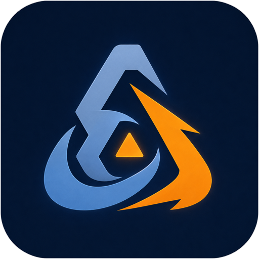

1
Лаунчер запускается как есть
Мы не подменяем «Леста Игры» и не качаем игры сами. Приложение поднимает настоящий лаунчер, а он штатно ставит и обновляет клиент. Поэтому доступен весь его каталог, а не отдельная игра.

Game Triathlonpre-alpha · открытый исходный код
Game Triathlon поднимает «Леста Игры» прямо на macOS, а лаунчер уже сам ставит и обновляет игры: «Мир танков», «Мир кораблей», Tanks Blitz.
Бесплатно, MIT. Без рекламы и телеметрии. Файлы игры и лаунчера никуда не передаются.
Никакой виртуальной машины и второй операционной системы. Windows-программа запускается прямо на macOS, а обращения к видеокарте переводятся в Metal.
Мы не подменяем «Леста Игры» и не качаем игры сами. Приложение поднимает настоящий лаунчер, а он штатно ставит и обновляет клиент. Поэтому доступен весь его каталог, а не отдельная игра.
Графика идёт через DXMT — прямую трансляцию DirectX 11 в Metal, родной графический интерфейс macOS. Без медленного обходного пути через OpenGL. На аварийный случай рядом лежит DXVK и переключается одной настройкой.
Wine, его библиотеки и графический слой входят в приложение. Homebrew, Xcode и ручная возня не нужны: единственное системное требование — Rosetta 2, и если её нет, приложение предложит штатную установку.
Wine — не эмулятор: он не изображает целый компьютер, а переводит обращения Windows-программы к системе в понятные macOS. Поэтому нет накладных расходов виртуальной машины, и игра работает с процессором напрямую.
В поставке — Wine 11.0, собранный проектом из исходных текстов CrossOver. Апстримный Wine той же версии установку лаунчера не проходит: дело в патчах CodeWeavers, а не в номере версии. Это единственный движок, на котором создаются бутылки.
Код процессора x86-64 исполняет Rosetta 2 — штатный механизм Apple. Он полностью работает по macOS 27 включительно; в macOS 28 Apple его убирает, и к этому моменту проект должен переехать на другой путь.
Скриншоты и запись игры появятся здесь после первой публичной сборки.
Публичных сборок пока нет.
Первая сборка появится на странице релизов — там же будут все следующие версии и список изменений. Пока проект можно собрать самому из исходных текстов.
Готовится к первому релизу.
| Минимум | Комфортно | |
|---|---|---|
| Чип | Apple M1, 8 ГБ памяти | M-Pro / Max / Ultra, 16 ГБ и больше |
| macOS | 26 | 26 и новее |
| Диск | 70 ГБ свободно | 100 ГБ |
| Прочее | Rosetta 2 — приложение предложит установить, если её нет | |
Mac на процессорах Intel не поддерживаются и в ближайших планах не значатся.
Проект ничего не меняет в игре и не вмешивается в её работу: он лишь создаёт окружение, в котором запускается обычный, ничем не тронутый клиент. Тем не менее официальной поддержки macOS у Lesta нет, и никаких гарантий на этот счёт мы дать не можем — как и любой сторонний проект. Решение за вами.
Целиком проверен «Мир танков»: установка, вход в аккаунт, бой. «Мир кораблей» и Tanks Blitz ставятся тем же лаунчером и по идее должны работать так же, но вживую их ещё не запускали — обещать не будем.
Нет. Wine, его библиотеки, графический слой и служебные утилиты входят в приложение — докачивать при первом запуске нечего. Единственное требование системы — Rosetta 2; если её нет, приложение предложит штатную установку macOS.
Оно не повреждено. Так macOS реагирует на любую программу без подписи Apple.
Снимите карантин командой xattr -cr "/Applications/Game Triathlon.app"
и откройте снова.
Само приложение — больше гигабайта, потому что несёт движок целиком. Основное место уходит на игру: рассчитывайте на 70 ГБ свободных, комфортно — 100.
Нет, виртуальной машины здесь нет, и вторая операционная система не нужна. Windows-программа работает поверх macOS напрямую, а графика переводится в Metal. Накладные расходы есть, но это не эмуляция целого компьютера.
Rosetta 2 полностью работает по macOS 27 включительно, а в macOS 28 Apple её убирает. Проект знает об этом сроке, и переход на другой способ исполнения x86-кода — отдельная задача в плане развития.
Никуда. В приложении нет ни рекламы, ни телеметрии, ни сбора статистики. Файлы игры и лаунчера остаются на вашем компьютере. Логин и пароль вы вводите в самом лаунчере Lesta, приложение их не видит и не хранит.
Заведите обсуждение на GitHub и приложите логи — приложение складывает их в
~/Library/Logs/GameTriathlon. Большинство известных неполадок уже
разобрано в документации проекта с готовыми решениями.
Game Triathlon делается в свободное время и остаётся бесплатным. Если он вам пригодился — можно поддержать разработку. На что идут средства:
Платёж проходит на стороне CloudTips. Ни сайт, ни приложение не получают и не обрабатывают платёжные данные.